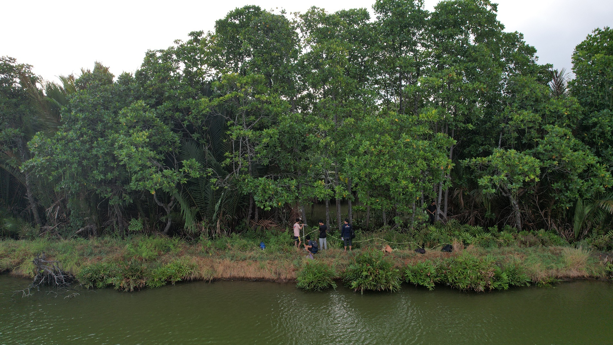
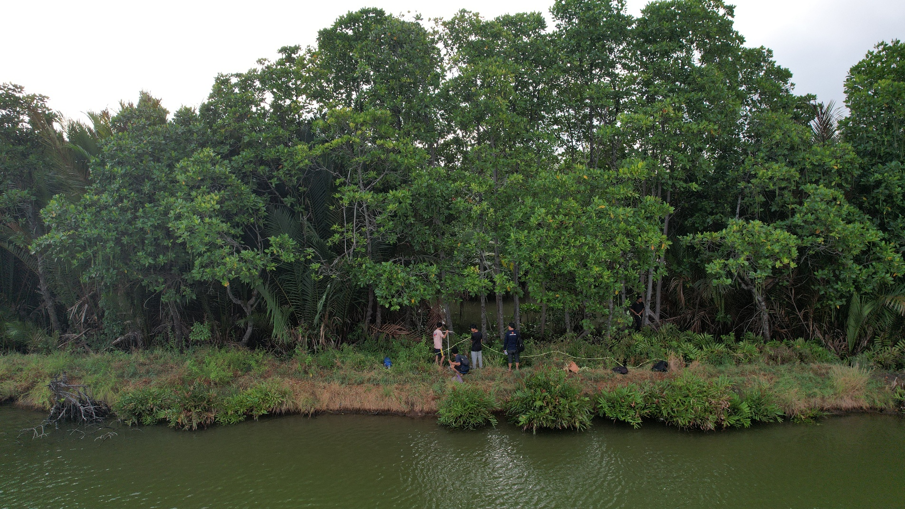
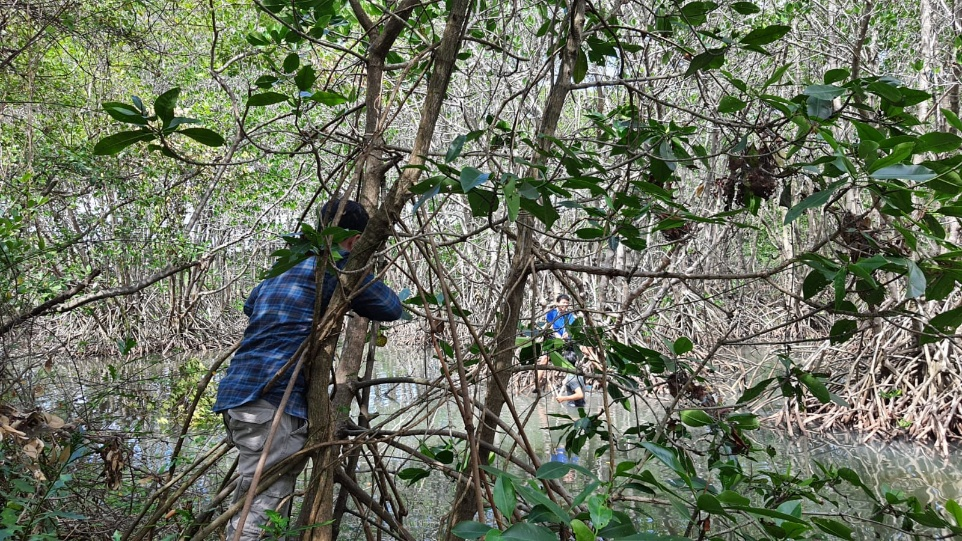
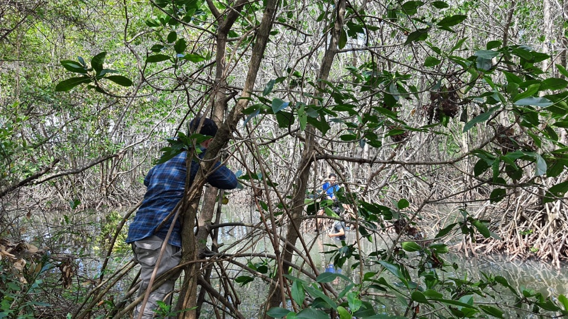
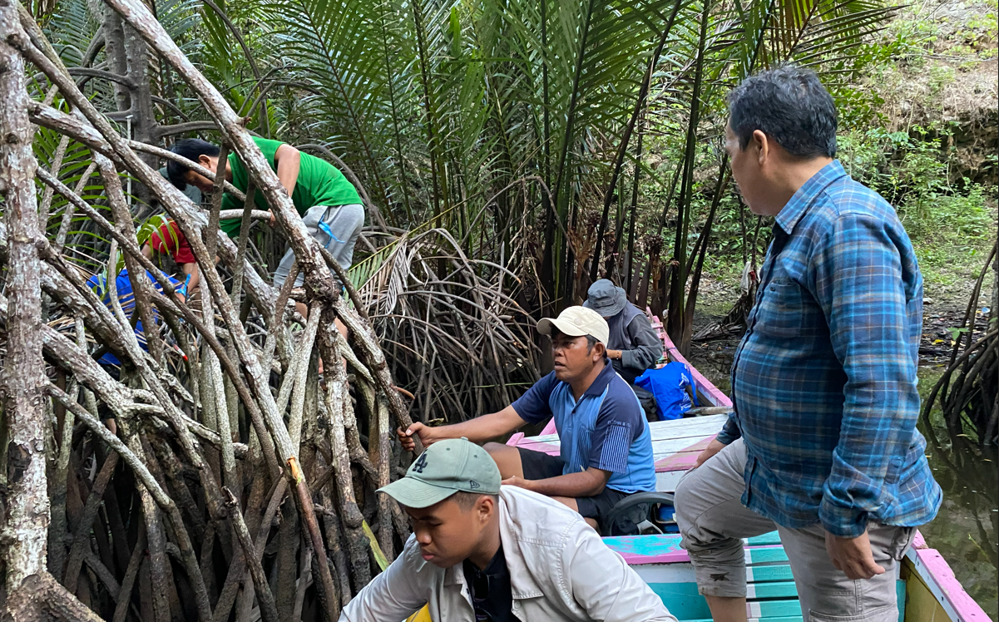
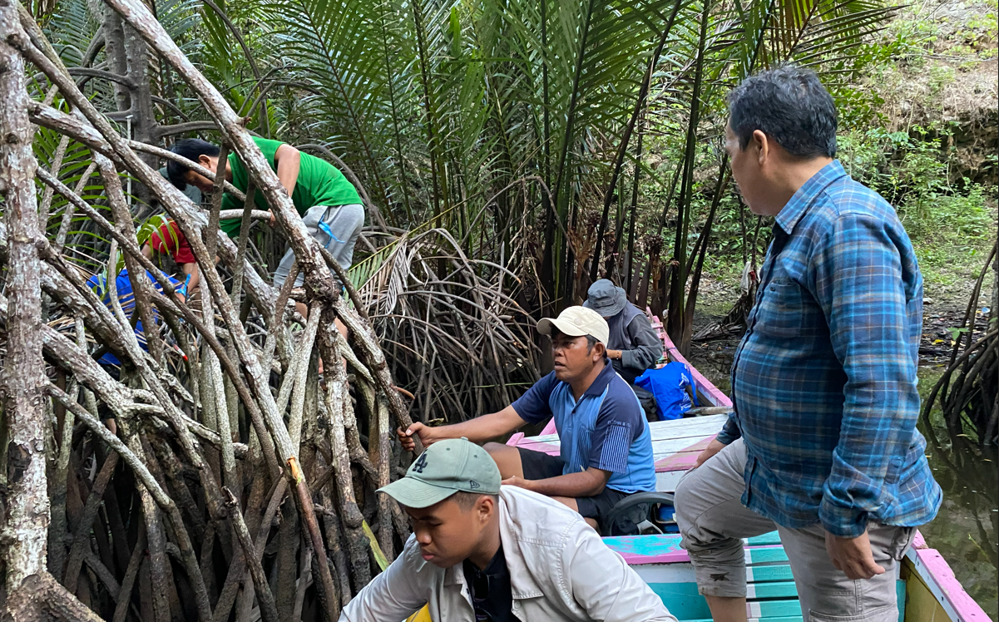
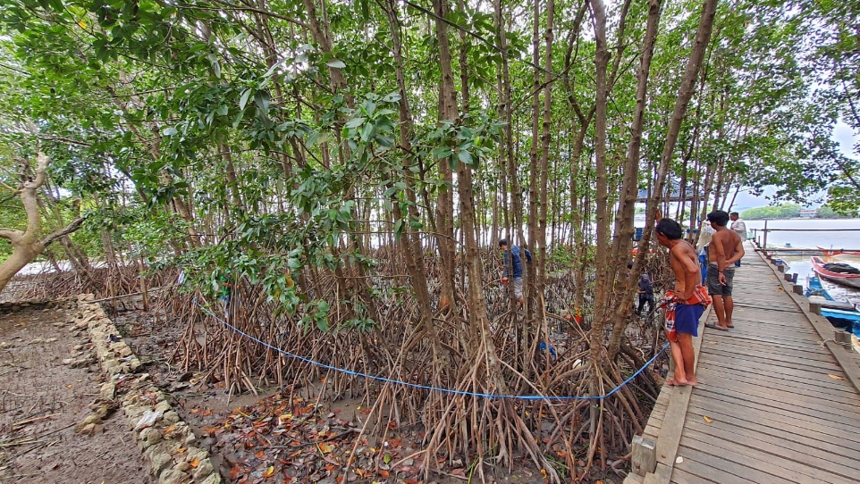
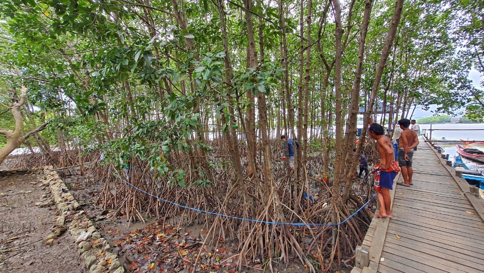
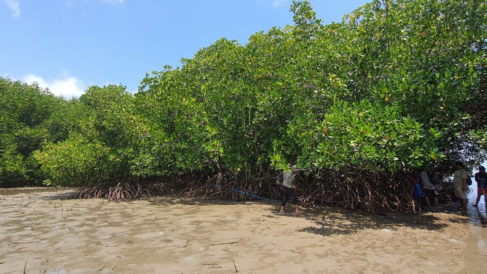
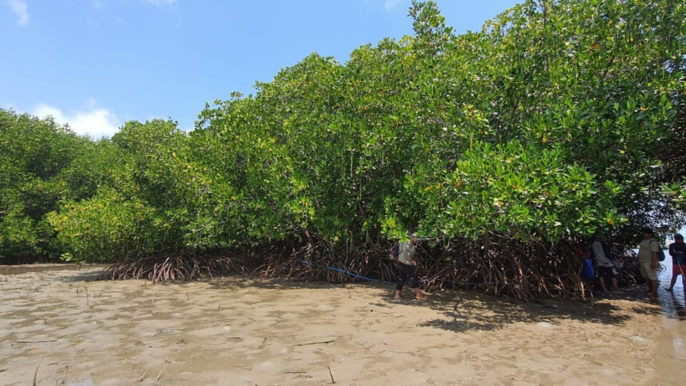

Lantebung, Makassar
Mangrove hasil rehabilitasi menunjukkan C-organik 285,48 ton/ha dengan karbon tersimpan 0,00105 ton. Nilai CO₂e sebesar 3,08 ton menunjukkan keberhasilan rehabilitasi dalam mendukung fungsi ekologis dan mitigasi iklim.


Mangrove hasil rehabilitasi menunjukkan C-organik 285,48 ton/ha dengan karbon tersimpan 0,00105 ton. Nilai CO₂e sebesar 3,08 ton menunjukkan keberhasilan rehabilitasi dalam mendukung fungsi ekologis dan mitigasi iklim.
Delta Lakkang memiliki nilai C-organik tertinggi yakni 396,18 ton/ha, dengan karbon tersimpan 0,00254 ton. Potensi serapan CO₂e mencapai 7,51 ton, menjadikan kawasan ini sebagai penyimpan karbon mangrove paling signifikan di antara lokasi kajian.


 



Habitat mangrove di kawasan ini memiliki kandungan C-organik sebesar 285,48 ton/ha. Karbon tersimpan pada spesies mangrove relatif rendah (0,00076 ton), namun tetap berkontribusi pada mitigasi perubahan iklim dengan potensi serapan CO₂e sebesar 2,69 ton. Studi geospasial menunjukkan peningkatan intrusi air laut dan perubahan morfologi delta di area ini.


 



Mangrove pada kawasan karst ini memiliki C-organik 285,48 ton/ha dengan karbon tersimpan relatif lebih tinggi (0,00349 ton). Hal ini menghasilkan potensi serapan CO₂e sebesar 5,51 ton, menandakan peran penting mangrove karst dalam penyimpanan karbon.


 



Nilai C-organik mangrove mencapai 285,48 ton/ha. Karbon tersimpan sebesar 0,00100 ton, menunjukkan fungsi ekosistem muara sebagai penyerap karbon dengan estimasi reduksi emisi CO₂e sebesar 3,67 ton.


 



Habitat mangrove Pantai Puntondo menunjukkan C-organik sebesar 285,48 ton/ha. Karbon tersimpan mencapai 0,00168 ton dengan potensi penyerapan CO₂e sebesar 6,15 ton, yang mencerminkan kontribusi signifikan mangrove pesisir terhadap pengurangan emisi karbon.


 



Kawasan ini memiliki kandungan C-organik 285,48 ton/ha dan karbon tersimpan 0,00092 ton. Potensi serapan karbon setara CO₂e sebesar 3,36 ton, menegaskan fungsi mangrove teluk sebagai penyerap karbon alami.


Mangrove Pulau Tanakeke memiliki C-organik 292,86 ton/ha dan karbon tersimpan 0,00115 ton. Potensi penyerapan CO₂e sebesar 4,16 ton menunjukkan peran strategis pulau kecil dalam penyimpanan karbon biru.